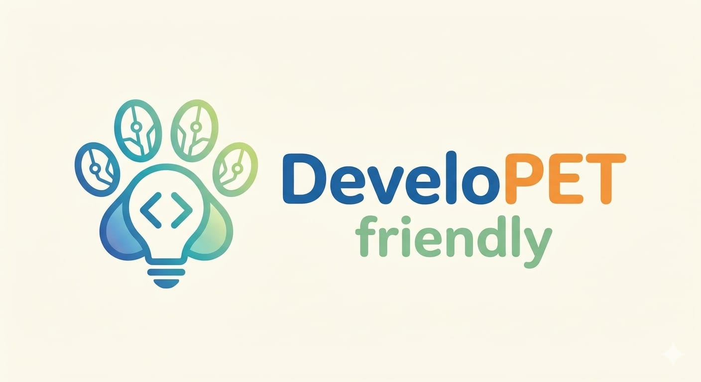

Verónica Greco
Bioquímica y desarrolladora. Enfocada en soluciones para entornos industriales y de laboratorio.
Ver Perfil
Somos DeveloPET Friendly, un equipo apasionado por el código, los datos, la automatización y, por supuesto, nuestras mascotas. Buscamos fusionar el aprendizaje IT con nuestras experiencias para crear soluciones reales.
Bioquímica y desarrolladora. Enfocada en soluciones para entornos industriales y de laboratorio.
Ver PerfilAdministración en salud y tecnología. Mamá del perrito Nilo y fan de Angular.
Ver PerfilApasionado de los datos, el gaming y el streaming. Creador de dashboards dinámicos.
Ver PerfilDesarrollador Full Stack & IA. Amante de la automatización y la acuariofilia.
Ver Perfil